1. 天地創造
すべては神様の愛から生まれ、人間は「極めて良かった」と言われるほど大切に造られました。
「神はお造りになったすべてのものをご覧になった。見よ、それは極めて良かった。」創世記 1:31
聖書は、数千年の時を超えて読み継がれてきた「愛と希望の物語」です。それは単なる歴史物語ではなく、今を生きる私たち一人ひとりへのメッセージが込められています。
聖書は大きく分けて「旧約聖書」と「新約聖書」の二部構成になっています。旧約聖書は救い主が来るための「約束と準備」、新約聖書はその約束が果たされた「成就と愛」を描いています。
壮大なパズルのピースを一つずつはめていくように、聖書全体の流れを知ることで、神様の深い愛がより鮮明に見えてくるはずです。あなたの人生を照らす光を、ここから見つけてみませんか？
ご質問や感想があれば、いつでもお気軽にインスタのDMまでお寄せください。
救い主がこの世に来るまでの長い「約束と準備」の期間を紐解きます。すべてのエピソードが、やがて来るイエス・キリストを指し示しています。
すべては神様の愛から生まれ、人間は「極めて良かった」と言われるほど大切に造られました。
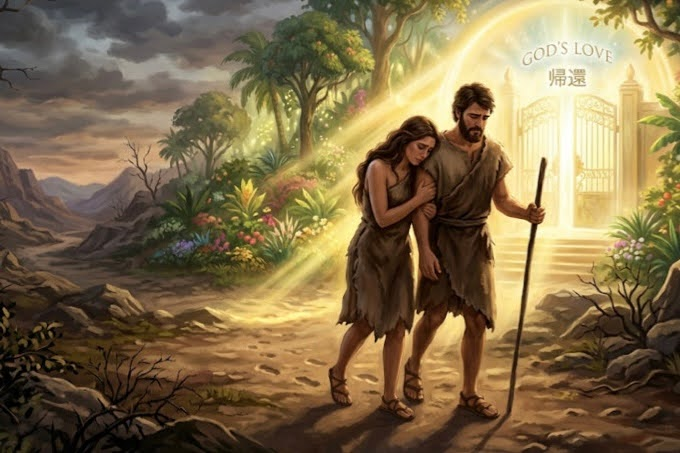
約束を破り、神様との距離が離れてしまいました。ここから救いの計画が始まります。
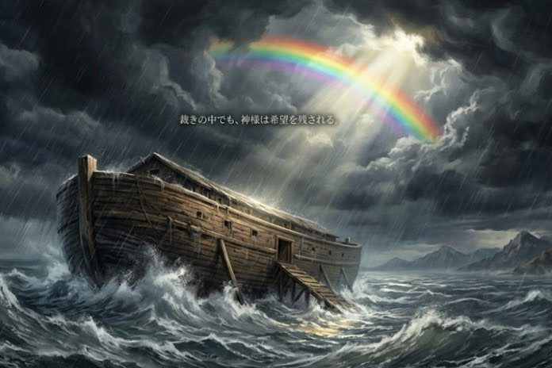
虹は、神様がもう二度と滅ぼさないという愛の約束の印です。
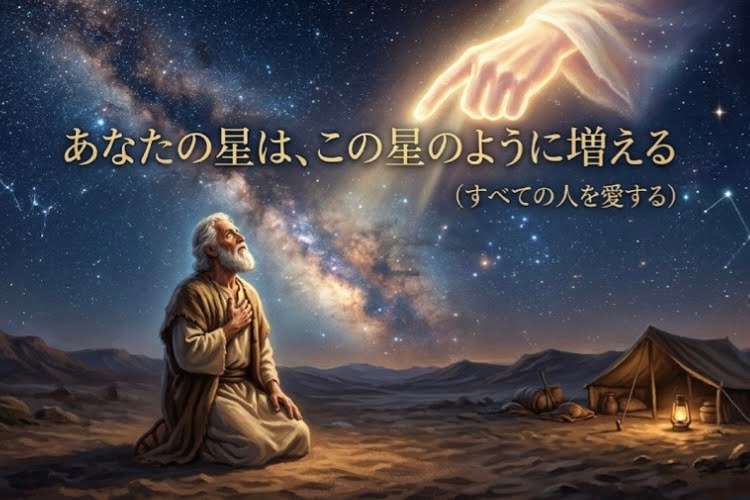
彼の子孫からイエス様が生まれるという、壮大な救いの計画のスタートです。
神様が用意された「身代わりの羊」は、後のイエス様の十字架の予告です。
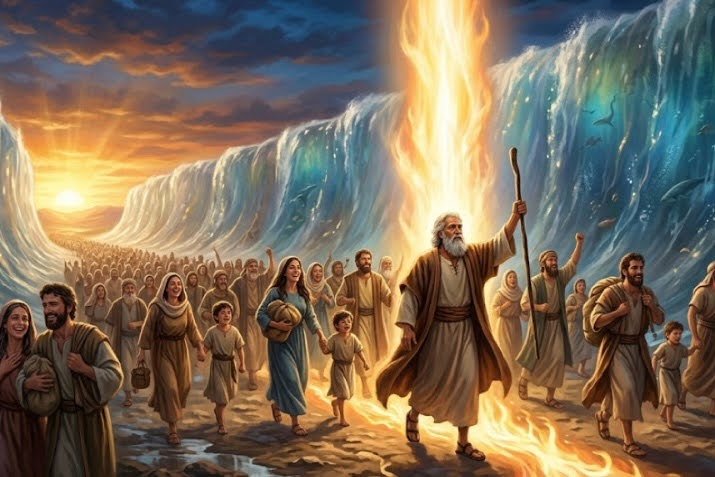
海を割る奇跡で、民を自由へと導き出しました。
幸せに生きるためのルールですが、人間は自分の力だけでは守れない弱さを持っていました。
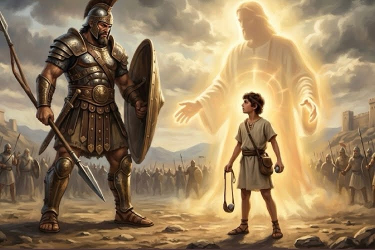
目に見える強さではなく、目に見えない「神様への信頼」が勝利を呼びます。
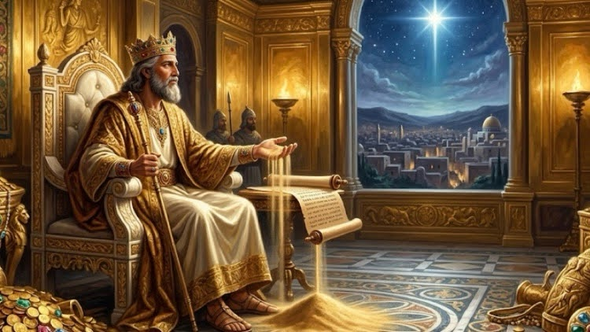
知恵は神様を敬うことから始まります。知恵によって国は黄金時代を迎えました。
私たちの罪を背負って傷つく「救い主」が来ると具体的に預言されました。
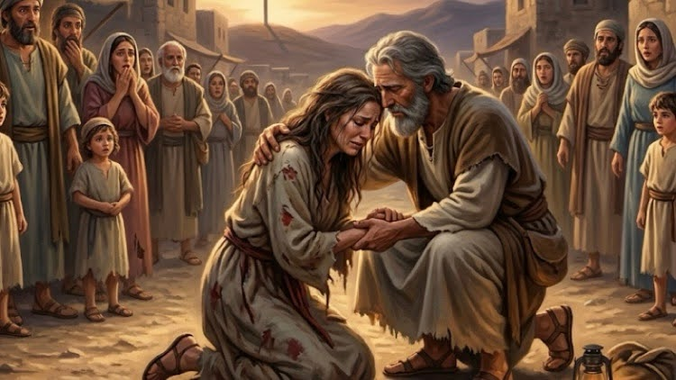
裏切って去った妻を、代価を払って買い戻し、再び迎え入れたホセア。神様の「あきらめない愛」の象徴です。
試練を乗り越え帰還した人々。救い主誕生までの沈黙の時間を、静かに熱心に待ち続けました。
神様が人間として来てくださった、最高のプレゼントです。
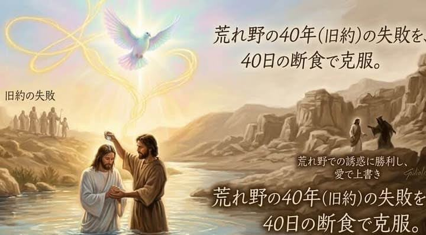
御言葉の力で、すべての誘惑を退けました。
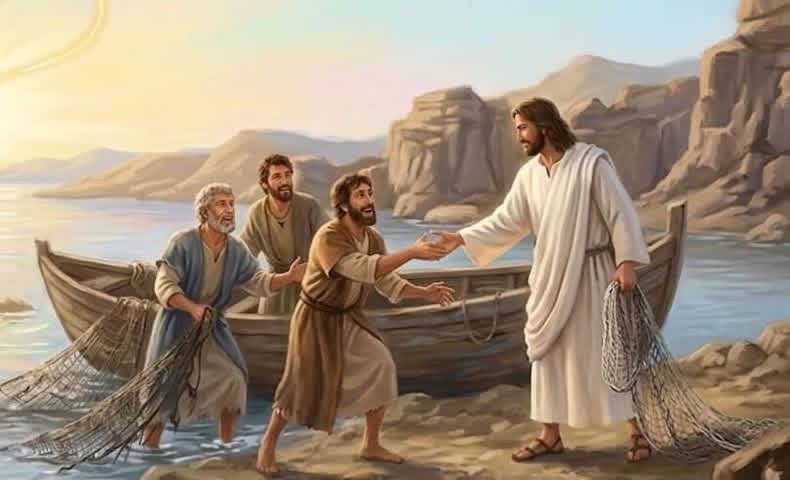
「ついてきなさい」という招きから、新しい歩みが始まりました。
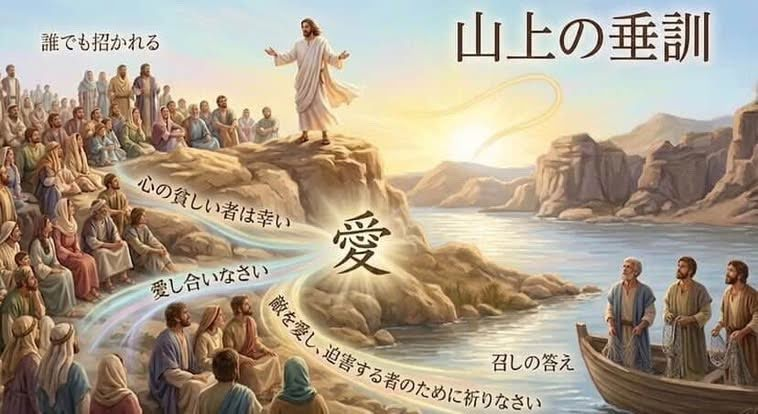
天の国の幸いについて、愛の心で教えられました。
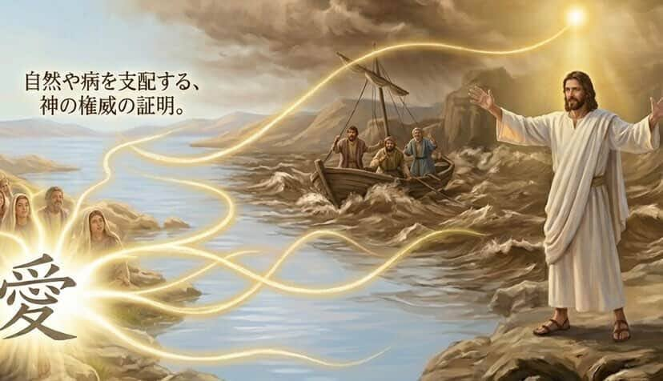
自然も病も支配される神の権威を示されました。
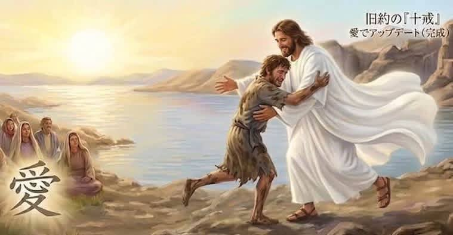
神様はいつでもあなたの帰りを、走り寄って待っています。
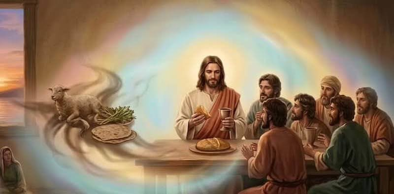
パンと杯による、新しい愛の約束の夜です。
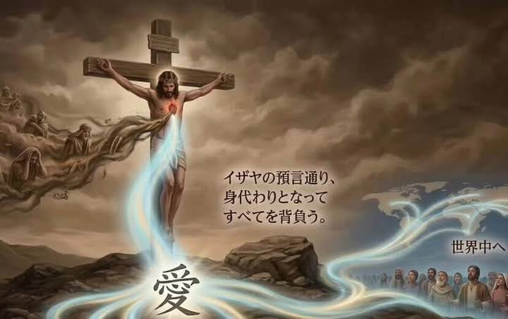
愛を完成させるための、究極の犠牲でした。
死に打ち勝ったイエス様は、今もあなたと共にいます。
💡 使い方 下線の部分にマウスを乗せる（スマホは長押しする）と、隠れた答えが見えるよ！
学びを振り返ってみましょう！全問正解を目指して挑戦してね。
生駒聖書学院卒業の献身者であり、現在は教師として聖書の普及に努めています。確かな知識に基づき、聖書の歴史を分かりやすく紐解きます。
桜総合学院にてWebデザインを専攻。UDフォントやパステルカラーを用いた中高生に届くデザインで視覚化を担当しています。